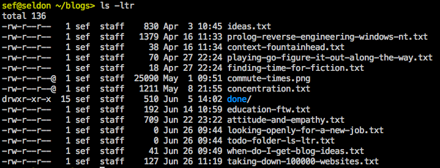

Managing Work-In-Progress Folders with "ls -ltr"
I've developed a nice little way to manage my work in progress folders.
I keep a bunch of folders around where I can stick things that are in-flight: one for home projects, one for blogs, etc. I like accumulating ideas in there, one idea per file, that I can come back to and fuss over until something is ready.
The folder is flypaper for ideas and notes. My blog folder has about twenty files right now.
Using "ls", and relying on file and directory modification times, is a useful way to keep track of all these files. Here's how.
As projects are finished I move them into a "done" folder. This gets them out of the way. A useful side effect is the modification time of the done directly itself gets updated.
The in-flight projects I care about most are the ones most recently updated: as an idea gets older it becomes less and less interesting. When looking at this directory I use the "ls -ltr" command. "l" means long (so you can see dates), "t" means sort by modification time, and "r" reverses that sort, so you see latest modified on the bottom.

The old files are at the top where I don't worry about them. Some even scroll off the top of the screen, that's fine. The done folder is a nice visual line for when something was last completed (say, published). Having a separate color for directories makes this visually apparent. And the bottom of the list are those most recently modified. Generally I work on the bottom up. Sometimes I go back to an old idea and add some notes. That bumps it to the top of the line -- it is interesting again.
I probably type "ls -ltr" at least 5 times an hour. I've never aliased it since my muscle memory is so strong (but maybe I still should).
Comments
Comments powered by Disqus